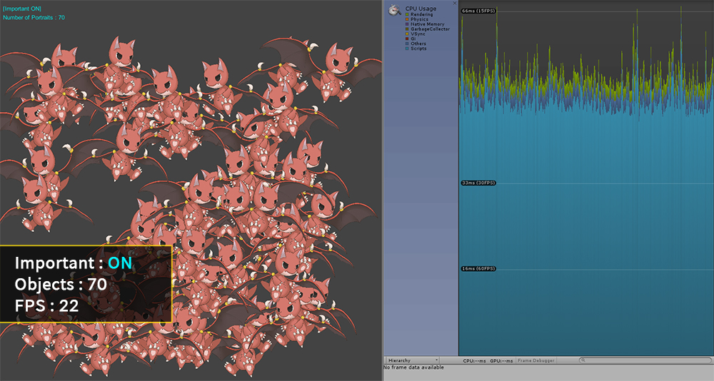
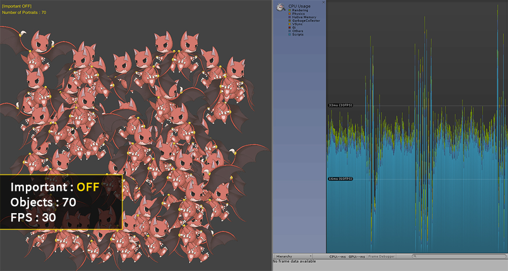
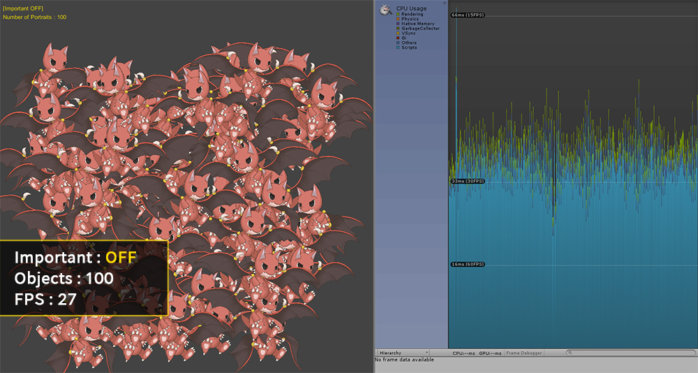
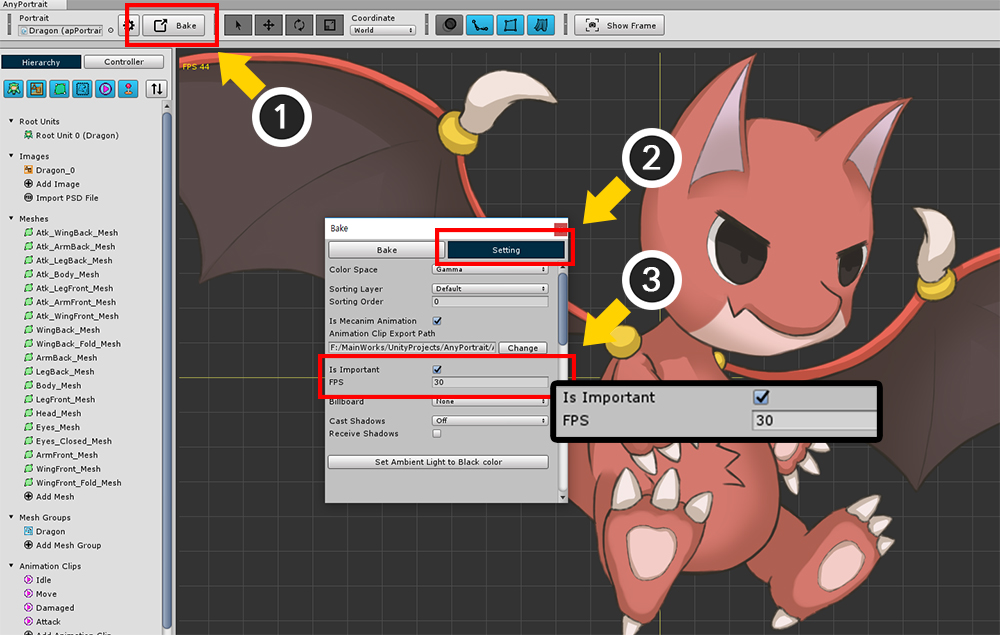

AnyPortrait > マニュアル > 「Important」と多数のオブジェクト
「Important」と多数のオブジェクト
1.2.3
ゲームで画面に数多くのキャラクターが登場する場合があります。
主に見ることができる例は、「1人のプレイヤーと多数のモンスターが登場する場合は」である。
しかし、多くのキャラクターが登場すれば、ゲームは非常に遅くなり、スムーズにゲームをプレイすることができません。
AnyPortraitの「Importantオプション」を変更すると、パフォーマンスを向上させることができます。
- Important ON：毎フレームごとに更新されて、アニメーションがスムーズです。 （デフォルト）
- Important OFF：更新フレームが制限されて、アニメーションの品質は少し落ちますが、パフォーマンスが向上します。 物理機能（Jiggle Bone、Physics Modifier）は無効になります。
一般的に、プレイヤーキャラクターのように重要なオブジェクトは、Importantオプションをつけることをお勧めします、
多数で登場するが、アニメーションの品質が低くてもされているモンスターや背景のオブジェクトは、
Importantオプションを引くことをお勧めします。
下のプロファイリング結果からImportantオプションの値に応じて性能の違いを見ることができます。
（下の実験結果は、オブジェクトの複雑さ、実行環境、シーンの構成に応じて別の方法で測定することができます。）

アニメーションが再生されているキャラクターを50個配置した画面です。
キャラクターのImportant設定はオンになっており、FPS（Frames Per Second）は、約30を記録した。

20つのキャラクターをより作成して、合計70個のキャラクターが配置されました。
キャラクターが追加されただけFPSが減少し、約22のFPSを記録しました。

100つのキャラクターが配置されるのでFPSが15まで減少しました。
このように性能が低下した場合には、通常のゲームプレイを期待することができないでしょう。

Importantオプションをオフにしてキャラクターを配置してみました。
キャラクターのImportantオプションでの「制限されたFPSの設定」は、30です。
キャラクターが50個配置されたときImportantオプションがオンの場合と同様にFPSは30を記録した。
この状態では、アニメーションが毎フレームごとに更新されることがないので、プロファイラでのFPSが多少特異な記録されていることを見ることができます。

キャラクターを70個配置した結果です。
FPSは30またはそれよりわずかにそれ以上を記録してImportantオプションがオンの場合よりも高い性能を示しています。
AnyPortraitはImportantオプションがオフになって、同じキャラクターのアップデートを一括して管理するタスクを実行します。
そして、この過程で、可能な別のフレームでキャラクターの更新を処理しようとします。
ただし、他の要因によってFPSが変動した場合AnyPortraitはキャラクターの更新のタイミングを調整するため、一時的なフレームの低下現象（Spike）が発生することがあります。
（Unityで定期的にメモリ管理などの理由でFPSが変動します。）

100つのキャラクターを配置した結果です。
FPSは少し減ったがImportantオプションがオンの場合よりも良好な約27を記録しました。
可能な限り、すべてのフレームに均等にキャラクターのアップデートを分散させたことをプロファイラを介して確認することができます。

Importantオプションを変更する方法はいくつかあります。
まず、「Bakeダイアログ」のオプションを変更してみましょう。
(1) Bakeボタンを押します。
(2) Settingタブを選択します。
(3) 「Is Important」の項目をクリックして設定を変更することができます。
「FPS」の項目は、Importantオプションがオフの場合の更新頻度です。
（一般的には15、20、30の値を推奨します。）

「Inspector UI」で「Is Important」の項目をクリックして設定を変更することもできます。スクリプトでもImportantオプションを変更することも可能です。
関連ページから「SetImportant（bool）」関数を確認してみてください。
スクリプトを利用する場合、リアルタイムでのオプションを変更することができますので、ゲームの最適化に役立つでしょう。
参考
v1.2.3から、「Importantオプション」が無効にされた状態で、キャラクターが「固定FPS」で実行するとの処理が改善されました。
今断続的なフレームの低下現象（Spike）が可能な発生しないように改善しました。
このバージョンからは、固定FPSはゲームのFPSの半分またはそれ以下のみ動作するように制限されます。
もしゲームのFPSが低いか高すぎる固定FPS値が指定された場合、無条件にゲームのFPSの半分またはそれ以下で実行されるように強制的にされます。